单因子方差分析
学习目标
- 目标
- 掌握单因子方差分析的流程和原理
- 知道事后检验的作用
目标: 用来判断由一个名义变量分割的多个总体的均值是不是相等
方差分析(analysis of variance)，简写为ANOVA，指的是利用对多个样本的方差的分析，得出总体均值是否相等的判定。
先来个例子
为了检验某小学六年级教学质量的差异，从该小学六年级的三个班级中分别选取一定数量的学生，分成三个组（三个样本），对他们期末考试的平均分进行统计分析。如果实验显示每个每组的均值相同，即三个班期末考试的成绩差异不大，则表明该小学六年级不同班级的教学质量没有差异，
每个样本组的平均分分别为，方差分别为
给出零假设:
备择假设：样本组的均值不全相等(或或)
方差分析将会依据观测数据判定假设是否成立。
1.假定条件
- 每个样本的值服从正态分布
- 每个样本的方差相同
- 每个样本中的个体相互独立
2.统计量—F值
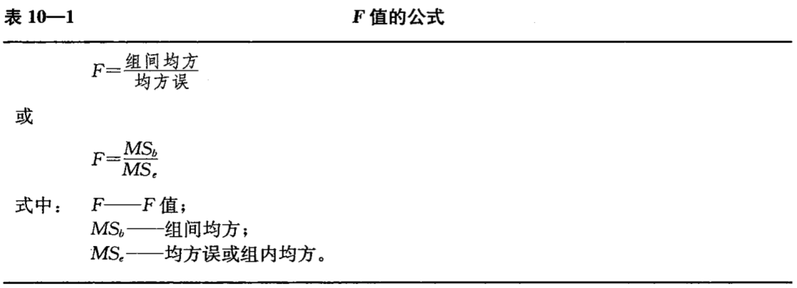
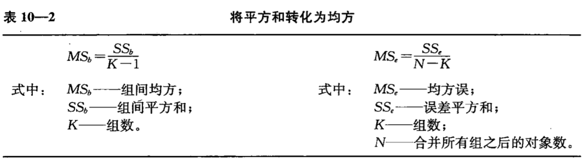
误差平方和
误差平方和就是残差,即由其他位置因素引起的误差,值为每一组的误差和
k为组数
为第i组的数据数量
为第i组第j个数据
为第i组的均值
计算方法:
- 将各组中的每个值减去该组均值(离差)
- 将将该组中这些离差取平方
- 将该组中这些离差平方求和
- 将所有组的离差平方和求和
组间误差平方和
组间误差平方和就是由分组变量引起的误差,是分组变量能够解释的误差,体现在各组均值的差异上.计算公式:
k为组数
为第i组的数据数量
为第i组的均值
为总均值
自由度
- 分子:k-1
- 分母:n-k
3.案例
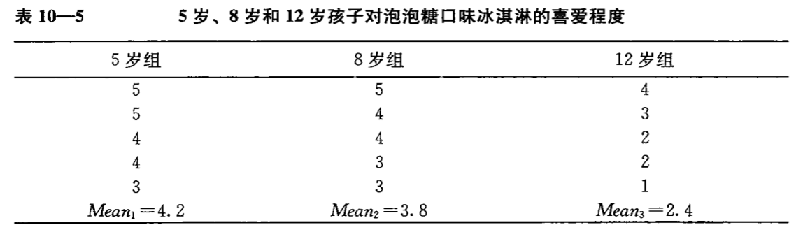
第一步:计算各组均值
第二步:计算总均值
将所有数加和除以个数得到总均值为3.47
第三步:计算误差平方和()
首先计算各单个取值与所在组均值之间的离差平方,将三个平方和相加得到
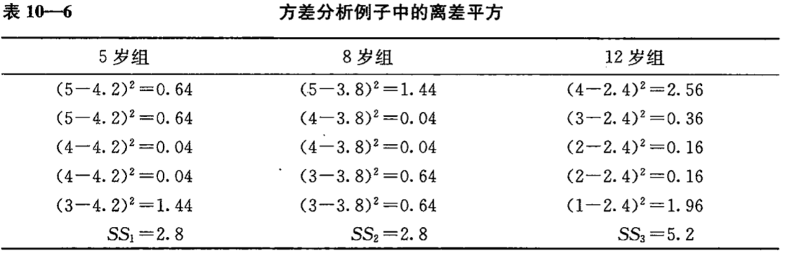
第四步:计算组间平方和()
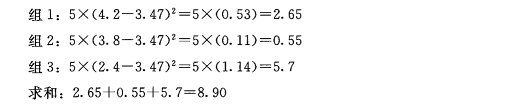
第五步:计算均方误()
将误差平方和()除以误差自由度():
第六步:计算组间均方()
将组间平方和()除以组间自由度():
第七步:计算比率
第八步:查表得到临界值
分子自由度为2,分母自由度为12,查表得到临界值为3.88()
第九步:判定值是否统计显著
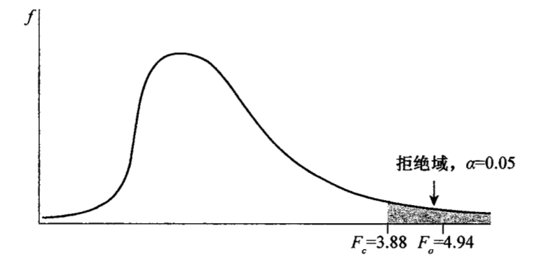
做出结论,认为统计结果是显著的,意味着各组均值不完全相等,就是说至少有两组的均值不相等
代码手动实现:
获取数据
#加载数据 x=np.array([5,5,4,4,3,5,4,4,3,3,4,3,2,2,1]) age=np.array([5,5,5,5,5,8,8,8,8,8,12,12,12,12,12]) data=pd.DataFrame(np.vstack([age,x]).T,columns=['age','x']) data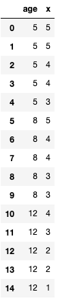
计算各组均值
#计算各组均值 means=data.groupby('age').mean() means.columns=['mu'] means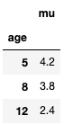
计算总均值
#计算总均值 mean=data['x'].mean() mean#3.466666666666667计算总误差
总误差就是数据整体的方差*n :
#计算总误差SST SST=np.sum(np.square(data['x']-mean)) SST#19.733333333333334计算残差(误差平方和)
#计算残差(误差平方和)SSE SSE_5=np.sum(np.square(data[data['age']==5]['x']-means.loc[5,'mu'])) SSE_8=np.sum(np.square(data[data['age']==8]['x']-means.loc[8,'mu'])) SSE_12=np.sum(np.square(data[data['age']==12]['x']-means.loc[12,'mu'])) SSE=SSE_5+SSE_8+SSE_12 SSE#10.8计算年龄带来的误差(组间平方和)
#计算年龄带来的误差(组间平方和)SSB SSB_5=5*(means.loc[5,'mu']-mean)**2 SSB_8=5*(means.loc[8,'mu']-mean)**2 SSB_12=5*(means.loc[12,'mu']-mean)**2 SSB=SSB_5+SSB_8+SSB_12 SSB#8.933333333333335计算和
#计算计算MSB和MSE n=data.shape[0]#总数据个数 k=means.shape[0]#组数 df1=k-1 df2=n-k MSB=SSB/df1 MSE=SSE/df2 MSB,MSE#(4.466666666666668, 0.9)计算F统计量
#计算F统计量 f=MSB/MSE f#4.962962962962964计算p值
#计算p值 p=1-ss.f.cdf(f,df1,df2) p#p=0.026874464601159942<0.05 拒绝原假设 各组均值不完全相等
scipy实现:
api:scipy.stats.f_oneway(*args):
参数:sample1, sample2, ... : array_like
返回值:
tstats:统计量值pvalue:p值
代码实现:
数据分组
#数据分组 df5=data[data['age']==5]['x'] df8=data[data['age']==8]['x'] df12=data[data['age']==12]['x']方差分析
#方差分析 f,p=ss.f_oneway(df5,df8,df12) f,p#(4.962962962962963, 0.026874464601159935)
statsmodels实现:
能够输出方差分析表,更优雅
#statsmodels实现
from statsmodels.formula.api import ols
from statsmodels.stats.anova import anova_lm
#分组字段必须是字符串类型
data.loc[:,'age']=data['age'].astype(np.str_)
#最小二乘法拟合
model = ols('x ~ age',data).fit()
#到处方差分析结果
anovat = anova_lm(model)
anovat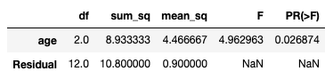
问题来了——怎么知道是哪些均值不相等
4. 事后检验
在判定组均值之间有显著差异后,仍有一些问题悬而未决.这个结果只能表明至少有两个组之间的均值有显著差异,但没有说明究竟哪几个组均值显著不同.我们必须进行事后检验
—检验
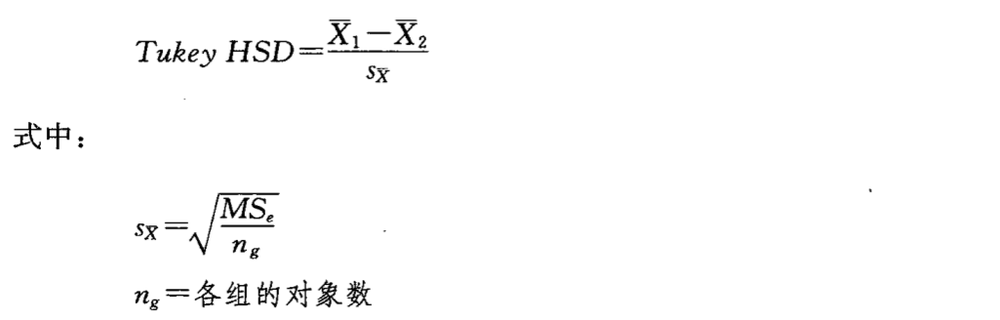
查询对应的统计量(分布)表来判定两个组均值是否显著差异
继续上面的案例
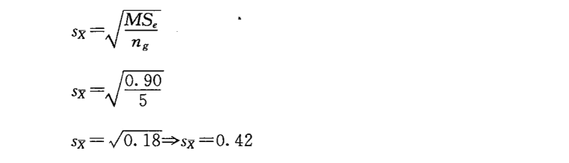
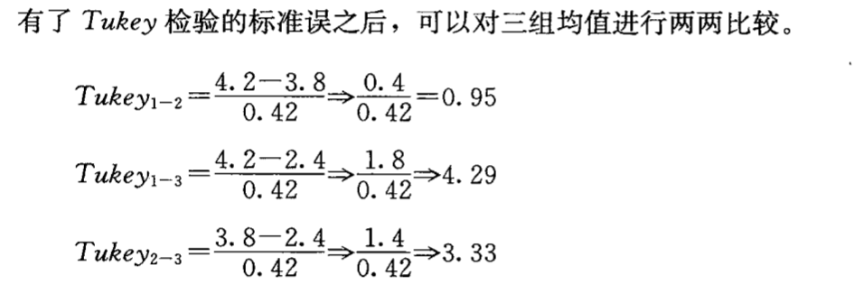
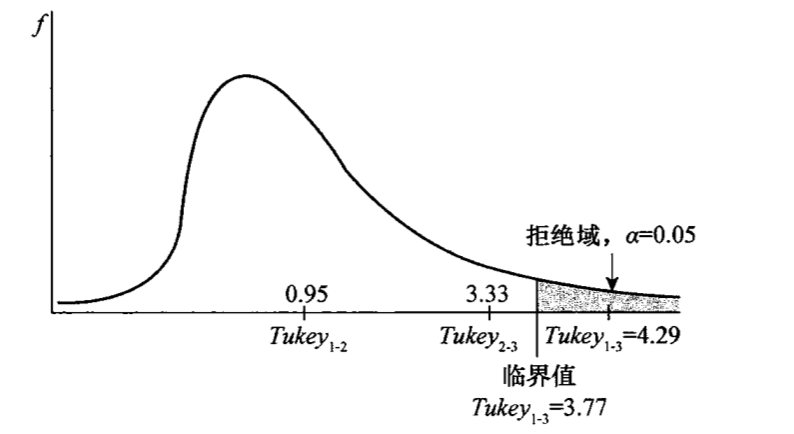
结论:组1和组3有显著差异
statsmodels实现:
from statsmodels.stats.multicomp import MultiComparison
mc = MultiComparison(data['x'],data['age'])
tukey_result = mc.tukeyhsd(alpha = 0.05)
print(tukey_result)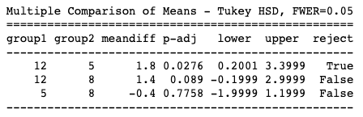
从结果中可以看出,5-12两组间拒绝原假设,有明显差异.其余两组间无明显差异
5.小结
- 单因子方差分析:用来判断由一个名义变量分割的多个总体的均值是不是相等
- 统计量:
- 意义是分组变量解释的误差/不可解释误差 的比例,该值越大,说明分组变量影响越大
- :总误差
- :组间误差(分组变量可解释的误差)
- :残差(不可解释的误差)
- api:
- scipy:
scipy.stats.f_oneway(*args) - statsmodels:
ols('x ~ age',data).fit()最小二乘拟合anova_lm(model)输出方差分析表
- scipy:
- 事后检验:
- 作用:找出有差异的组